A(b) = b * (10 - b)
plot(A, 0, 10)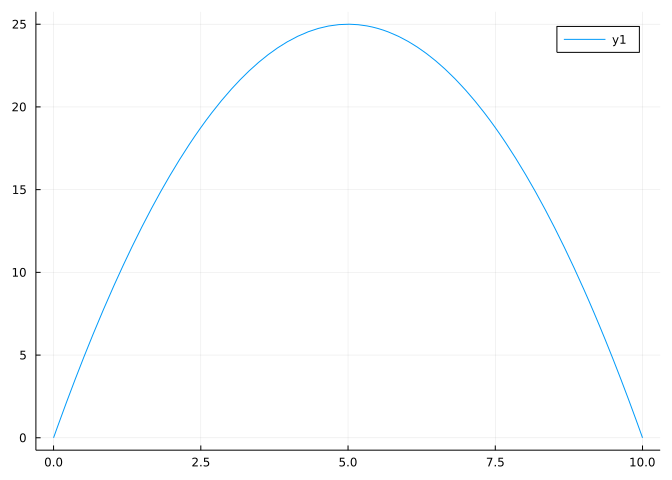
This project discusses a basic application of calculus to answer questions of the type: What is the largest value a function can take?
For example,
Of all rectangles with perimeter 20, which has of the largest area?
There are a few basic theorems that will help us. First is our “hunting license” which tells us there is actually something to find if some assumptions are met:
A real-valued continuous function \(f\) on a closed interval \([a,b]\) will obtain its maximum (minimum) value. That is there exists at least one value \(c\) in \([a,b]\) for which \(f( c) \geq f(x)\) (\(f( c) \leq f(x)\)) for any \(x\) in \([a,b]\).
The above complements a theorem of Fermat which can be expressed as:
Further, the extrema (maxima or minima) can only occur at a critical point of \(f\) or at the endpoints, \(a\) and \(b\).
Though not all of our problems lend themselves to a description of a continuous function on a closed interval, if they do we have an algorithmic prescription to find the absolute extrema of a function:
With the computer we can take some shortcuts, as we will be able to graph our function to see where the extreme values will be.
The simplest way to investigate the maximum or minimum value of a function over a closed interval is to just graph it and look.
We begin with the question of which rectangles of perimeter 20 have the largest area? The figure shows a few different rectangles with this perimeter and their respective areas.

The basic mathematical approach is to find a function of a single variable to maximize or minimize. In this case we have two variables describing a rectangle: a base \(b\) and height \(h\). Our formulas are:
\[ P = 20 = 2b + 2h, \quad A = bh. \]
We see that \(b\) can be no bigger than 10 and no smaller than 0 from the restriction put in place through the perimeter. Solving for \(h\) in terms of \(b\) then yields this restatement of the problem:
Maximize \(A(b) = b \cdot (10 - b)\) over the interval \([0,10]\).
This is exactly the form needed to apply our theorem about the existence of extrema (a continuous function on a closed interval). Rather than solve analytically by taking a derivative, we simply graph to find the value:
using MTH229
using PlotsA(b) = b * (10 - b)
plot(A, 0, 10)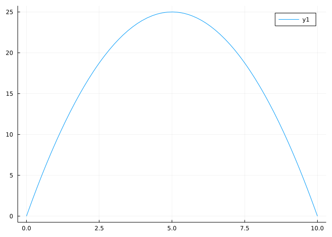
You should see the maximum occurs at \(b=5\) by symmetry, so \(h=5\) as well, and the maximum area is then \(25\). This gives the satisfying answer that among all rectangles of fixed perimeter, that with the largest area is a square.
Before moving on, let’s see a slightly different way to do this problem, where we trade off some algebra for a bit of abstraction. Let’s first write area as a function of both base and height:
A(b, h) = b*hA (generic function with 2 methods)Then from the constraint given by the perimeter being a fixed value we can solve for h in terms of b. We write this as a function:
h(b) = (20 - 2b) / 2h (generic function with 1 method)Then to get A(b) we simply need to substitute h(b) into our formula for the area, A. However, instead of doing the substitution ourselves using algebra we let julia do it through composition of functions:
A(b) = A(b, h(b))A (generic function with 2 methods)From this we can solve as before. This approach exploits julia’s multiple dispatch feature to reduce the need for sometimes unwieldy algebra.
Here is a similar, though more complicated, example where the analytic approach can be a bit more tedious, but the graphical one mostly satisfying, though we do use the find_zero function to find the exact final answer.
Let a “Norman” window consist of a rectangular window of top length \(x\) and side length \(y\) and a half circle on top. The goal is to maximize the area for a fixed value of the perimeter. Again, assume this perimeter is 20 units.

Then we have two equations.
The area is the area of the rectangle plus the area of the half circle (\(\pi r^2/2\)).
\[ A = xy + \pi(x/2)^2/2 \]
In julia this is
A(x,y) = x*y + pi*(x/2)^2 / 2A (generic function with 2 methods)The perimeter consists of 3 sides of the rectangle and the perimeter of half a circle (\(\pi r\), with \(r=x/2\)):
\[ P = 2y + x + \pi(x/2) = 20 \]
We solve for \(y\) in the first with \(y = (20 - x - \pi(x/2))/2\) so that in julia we have:
y(x) = (20 - x - pi * x/2) / 2y (generic function with 1 method)And then we substitute in y(x) for y in the area formula through:
A(x) = A(x, y(x))A (generic function with 2 methods)Of course both \(x\) and \(y\) are non-negative. The latter forces \(x\) to be no more than \(20/(1+\pi/2)\).
This leaves us the calculus problem of finding an absolute maximum of a continuous function over the closed interval \([0, 20/(1+\pi/2)]\). Our theorem tells us this maximum must occur, we now proceed to find it.
We begin by simply graphing and estimating the values of the maximum and where it occurs.
plot(A, 0, 20/(1+pi/2))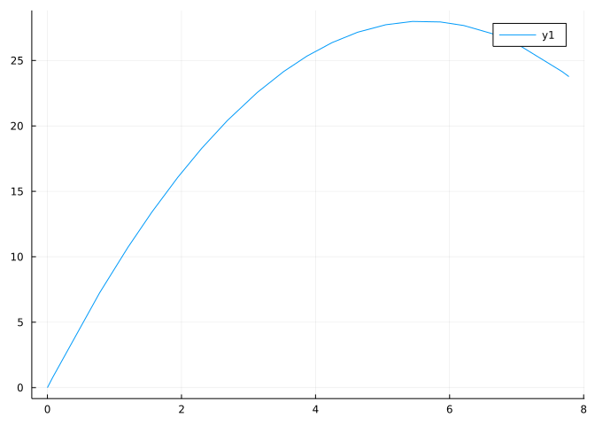
The naked eye sees that maximum value is somewhere around \(27\) and occurs at \(x\approx 5.6\). Clearly from the graph, we know the maximum value happens at the critical point and there is only one such critical point.
As reading the maximum from the graph is more difficult than reading a \(0\) of a function, we plot the derivative using our approximate derivative.
plot(A', 5.5, 5.7) # uses A' notation defined in MTH229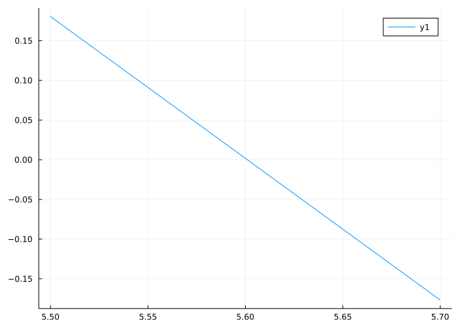
We confirm that the critical point is around \(5.6\).
Rather than zoom in graphically, we now use a root-finding algorithm, to find a more precise value. We know that the maximum will occur at a critical point, a zero of the derivative. Newton’s method, for example, can locate the precise values of these zeros. The find_zero function from the Roots package provides a non-linear root-finding algorithm similar to Newton’s method. The only thing to keep track of is that solving \(f'(x) = 0\) means we use the derivative and not the original function.
Our initial guess will be taken from the graph we made, or \(x=5.6\). Here is how we use find_zero:
x = find_zero(A', 5.6)5.600991535115575The value x is the critical point, and in this case gives the position of the value that will maximize the function. This value is sometimes referred to as the argmax, or argument which maximizes the function. The value and maximum area is then given by:
(x, A(x))(5.600991535115575, 28.00495767557787)(Compare this answer to the previous, is the square the figure of greatest area for a fixed perimeter, or just the figure amongst all rectangles?)
A rancher with 20 meters of fence, wishes to make a pen adjacent to an existing fence. The pen will be a rectangle with one edge using the existing fence. Say that has length \(x\), then \(20 = 2y + x\), with \(y\) the other dimension of the pen. What is the maximum area that can be made?
Many maximization and minimization problems involve triangles, which in turn use trigonometry in their description. Here is an example, the “ladder corner problem.” (There are many other ladder problems.
A ladder is to be moved through a two-dimensional hallway which has a bend and gets narrower after the bend. The hallway is 8 feet wide then 5 feet wide. What is the longest such ladder that can be navigated around the corner? The figure shows a ladder of length \(l_1 + l_2\) that got stuck – it was too long.

We approach this problem in reverse. It is easy to see when a ladder is too long. It gets stuck at some angle \(\theta\). So for each \(\theta\) we find that ladder length that is just too long. Then we find the minimum length of all these ladders that are too long. If a ladder is this length or more it will get stuck for some angle. However, if it is less than this length it will not get stuck. So to maximize a ladder length, we minimize a different function. Neat.
Now, to find the length \(l = l_1 + l_2\) as a function of \(\theta\).
We need to brush off our trigonometry, in particular right triangle trigonometry. We see from the figure that \(l_1\) is the hypotenuse of a right triangle with opposite side \(8\) and \(l_2\) is the hypotenuse of a right triangle with adjacent side \(5\). So, \(8/l_1 = \sin\theta\) and \(5/l_2 = \cos\theta\).
That is, we have
l(l1, l2) = l1 + l2
l1(t) = 8/sin(t)
l2(t) = 5/cos(t)
##
l(t) = l(l1(t), l2(t)) # or simply l(t) = 8/sin(t) + 5/cos(t)l (generic function with 2 methods)Our goal is to minimize this function for all angles between \(0\) and \(90\) degrees, or \(0\) and \(\pi/2\) radians.
This is not a continuous function on a closed interval – it is undefined at the endpoints. That being said, a quick plot will convince us that the minimum occurs at a critical point and there is only one critical point in \((0, \pi/2)\).
delta = 0.2
plot(l, delta, pi/2 - delta)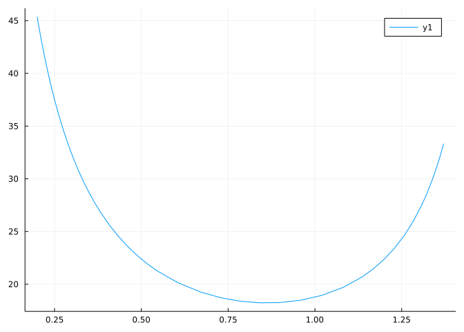
The minimum occurs between 0.5 and 1.0 radians, we will use a bracketing method:
x = find_zero(l', (0.5, 1.0))0.8634136052517809So the minimum of the function \(l\) is
l(x)18.219533699708656That is, any ladder less than this length can get around the hallway.
Rather than use a bracketing method to solve for the root of \(l'(t)=0\), we might have tried using find_zero(l', 0.8). Do so. What do you find?
A rain gutter is constructed from a 30” wide sheet of tin by bending it into thirds. If the sides are bent 90 degrees, then the cross-sectional area would be \(100 = 10^2\). This is not the largest possible amount. For example, if the sides are bent by 45 degrees, the cross sectional area is:
2 * (1/2 * 10*cos(pi/4) * 10 * sin(pi/4)) + 10*sin(pi/4) * 10120.71067811865474Find a value in degrees that gives the maximum. (The first task is to write the area in terms of \(\theta\).
A movie screen projects on a wall 20 feet high beginning 10 feet above the floor. What value of \(x\) gives the largest angle \(\theta?\) (Thanks https://www.math.ucdavis.edu/~kouba.)

What is the value of theta in degrees?
Ethan Hunt, a top secret spy, has a mission to chase a bad guy. Here is what we know:
For his mission, he needs to go 10 miles west and 5 miles north. He can do this by:
A quick analysis says:
Now, if he drives \(x\) miles west (\(0 < x < 10\)) he would run an amount given by the hypotenuse of a triangle with lengths \(5\) and \(10-x\). His time driving would be \(x/30\) and his time running would be \(\sqrt{5^2 + (10-x)^2}/10\) for a total of:
\[ T(x) = x/30 + \sqrt{5^2 + (10-x)^2}/10, \quad 0 < x < 10 \]
With the endpoints given by \(T(0) = \sqrt{10^2 + 5^2}/10\) and \(T(10) = (10 + 5)/30\).
Let’s plot \(T(x)\) over the interval \((0,10)\) and look:
T(x) = x/30 + sqrt(5^2 + (10-x)^2)/10T (generic function with 1 method)plot(T, 0, 10)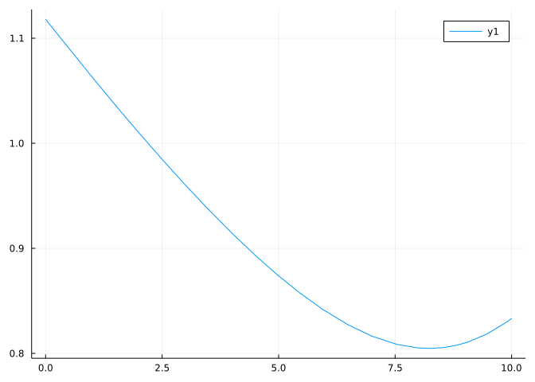
The minimum happens way out near 8. We zoom in a bit:
plot(T, 7, 9)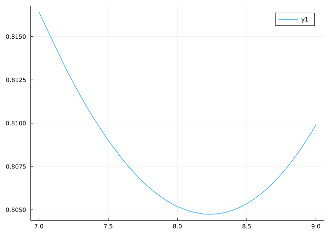
It appears to be around 8.3. We now use find_zero to refine our guess at the critical point using a bracketing algorithm:
x = find_zero(T', (7, 9))8.232233047033631Okay, got it. Around 8.23. So is our minimum time
T(x)0.804737854124365(Hint: what is the title of this section?)
A maximum likelihood estimator is a value derived by maximizing a function. For example, if
L(t) = t^3 * exp(-3t) * exp(-2t) * exp(-4t) ## 0 <= t <= 10L (generic function with 1 method)Then \(L(t)\) is continuous and has single peak, so the maximum occurs at the lone critical point. It turns out that this problem is bit sensitive to an initial condition, so we bracket
x = find_zero(L', (0.1, 0.5))0.3333333333333333Now if \(L(t) = \exp(-3t) \cdot \exp(-2t) \cdot \exp(-4t), \quad 0 \leq t \leq 10\), explain why the same approach won’t work:
Maximize the function \(xe^{-(1/2) x^2}\) over the interval \([0, \infty)\).
Here the extreme value theorem doesn’t technically apply, as we don’t have a closed interval. However, if we can eliminate the endpoints as candidates, then we should be able to convince ourselves the maximum must occur at a critical point of \(f(x)\). (If not, then convince your self for all sufficiently large \(M\) the maximum over \([0,M]\) occurs at a critical point, not an endpoint. Then let \(M\) go to infinity.)
So to approach this problem we first graph it over a wide interval.
f(x) = x * exp(-x^2)f (generic function with 1 method)plot(f, 0, 100)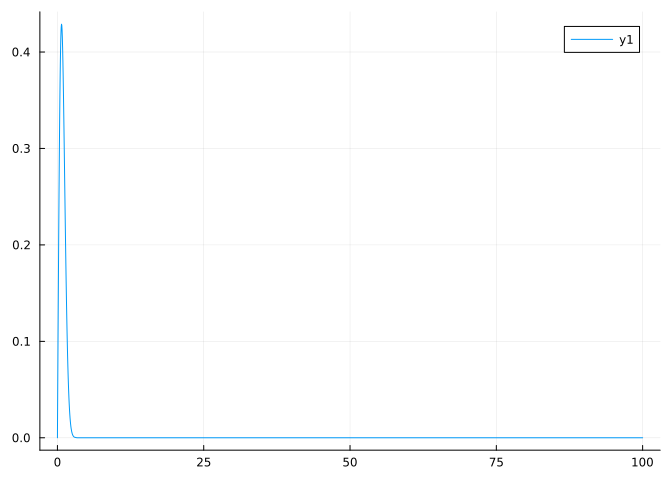
Clearly the action is nearer to 1 than 100. We try graphing the derivative near that area:
plot(f', 0, 5)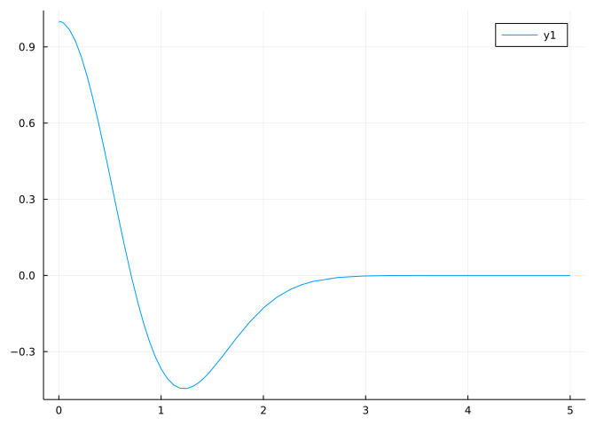
This shows the value near \(0.7\). We use find_zero starting there:
x = find_zero(f', 0.7)0.7071067811865476The convergence is quick. The maximum is at
f(x)0.42888194248035333For a more applied problem of this type (infinite domain), consider a can of some soft drink that is to contain 355ml which is 355 cubic centimeters. (We use metric units, as the relationship between volume (cubic centimeters) and fluid amount (ml) is clear.) A can to hold this amount is produced in the shape of cylinder with radius \(r\) and height \(h\). The materials involved give the surface area, which would be:
\[ SA = h \cdot 2\pi r + 2 \cdot \pi r^2 \]
The volume satisfies:
\[ V = 355 = h \cdot \pi r^2 \]
Find the values of \(r\) and \(h\) which minimize the surface area.
First the surface area in both variables is given by
SA(h, r) = h * 2pi * r + 2pi * r^2SA (generic function with 1 method)And solving from the constraint on the volume for h in terms of r we have
h(r) = 355 / (pi * r^2)h (generic function with 1 method)And composing gives us a function of r alone:
SA(r) = SA(h(r), r)SA (generic function with 2 methods)This we minimize subject to the constraint that \(r \geq 0\). A quick glance shows that as \(r\) gets close to \(0\), the can must get infinitely tall to contain that fixed volume, and would have infinite surface area as the \(1/r^2\) in the first term implies. On the other hand, as \(r\) goes to infinity, the height must go to 0 to make a really flat can. Again, we would have infinite surface area, as the \(r^2\) term at the end indicates. With this observation, we can rule out the endpoints as possible minima, so any minima must occur at a critical point.
We start by making a graph, making an educated guess that the answer is somewhere near a real life answer, or around 3-5 cms in radius:
plot(SA, 2, 10)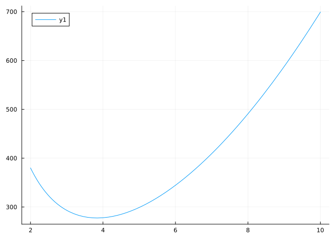
The minimum looks to be around 4cm. We can use find_zero to zero in on the answer:
r0 = find_zero(SA', 4)3.8372152480156734Okay, \(3.837...\) is our computation for \(r\). To get \(h\), we use:
h(r0)7.674430496031345This produces a can which is about square in profile. This is not how most cans look though. Perhaps our model is too simple, or the cans are optimized for some other purpose than minimizing materials.
Minimize the function \(f(x) = 2x + 3/x\) over \((0, \infty)\).
Of all rectangles of area 4, find the one with smallest perimeter. What is the perimeter?
Many problems are best done with implicit derivatives. A video showing such a problem along with how to do it analytically is here.
This video starts with a simple question:
If you have a rope and heavy ring, where will the ring position itself due to gravity?
Well, suppose you hold the rope in two places, which we can take to be \((0,0)\) and \((a,b)\). Then let \((x,y)\) be all the possible positions of the ring that hold the rope taught. Then we have this picture:

Since the length of the rope does not change, we must have for any admissible \((x,y)\) that:
\[ L = \sqrt{x^2 + y^2} + \sqrt{(a-x)^2 + (b-y)^2}, \]
where these are the two hypotenuses in the figure, as computed through Pythagorean’s theorem.
If we assume that the ring will minimize the value of y subject to this constraint, can we solve for y?
Well, with implicit differentiation you would regard \(y=y(x)\), implicitly differentiate and find the critical point of \(y\). Though messy to solve, the video shows a fundamental relationship which is a restatement of the reflection properties of ellipses.
Here we show how we can do this numerically with julia. We don’t really have an easy way to work with implicit functions in julia, so we have some work to do to find an explicit function.
First, lets assume \(a=1\) and \(L=10\) (\(L\) must be at least \(\sqrt{1 + b^2}\)) , then we have:
a = 1; Len = 10
f(x, y, a, b) = sqrt(x^2 + y^2) + sqrt((a-x)^2 + (b-y)^2)f (generic function with 2 methods)Now we solve for a value of \(b\), say \(b=1\). You could choose other values for \(b\), as long as \(L\) is long enough.
b = 1; ## some arbitrary choice for b
f(x, y) = f(x, y, a, b)f (generic function with 3 methods)Our values \((x,y)\) must satisfy \(f(x,y) = L\) so for a fixed \(x\), \(y\) must be a zero of the function:
\[ h(y) = f(x, y) - L = 0 \]
That is, if we start with \(x\) and solve this equation for \(y\) the resulting value \((x,y)\) will be on the curve. Call this function \(g\). We can define it with:
function g(x)
h(y) = f(x, y) - Len
find_zero(h, zero(x)) # not 0, but zero(x) to get type right
endg (generic function with 1 method)Let’s see if it worked. For \(x=0.4\) we get that \(y\) is
g(0.4)-4.4746883945649625And furthermore, we have
f(.4, g(0.4))10.0That this is \(L\), should be the case for any choice of \(x\) when we have convergence for \(g\). Try it yourself with a different value in \([0,1]\).
Now, through this inversion trick, we have a function \(y=g(x)\). We graph to see that indeed this function will have a minimum value:
plot(g, 0.2, 0.8)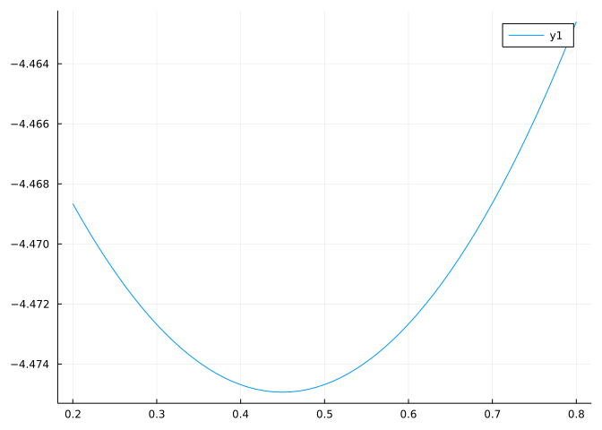
(The implicit function theorem will tell us that locally for any \(x\) we can find a function to return \(y\) provided a certain derivative is not \(0\) and the equation is reasonably behaved.)
Okay, now to find the lowest point. This is what we minimize to find the resting position of the ring. Again, we turn to find_zero, but for minimization we use the first derivative, as we are finding critical points.
x = find_zero(g', (0.3, 0.6))0.44974810923703934(The above only works due to how we defined g using zero(x) and not 0 for technical reasons related to automatic differentiation.)
The point where the ring rests is:
x, g(x)(0.44974810923703934, -4.4749371855331)If you watch the video linked to above, you will see that the surprising fact here is the resting point is such that the angles formed by the rope are the same. Basically this makes the tension in both parts of the rope equal, so there is a static position (if not static, the ring would move and not end in the final position). We can verify this fact numerically by showing the arctangents of the two triangles are the same:
t = g(x)
atan(abs(t)/x) - atan((b-t)/(a-x))0.0Now, were we lucky and just happened to take \(b = 1\) in such a way to make this work? Well, no. But convince yourself by doing the above for different values of \(b\).